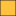

<!doctype html>
<html lang="en">
    <head>
        <meta charset="utf-8">
        <meta http-equiv="X-UA-Compatible" content="IE=edge">
        <meta name="viewport" content="initial-scale=1,user-scalable=no,maximum-scale=1,width=device-width">
        <meta name="mobile-web-app-capable" content="yes">
        <meta name="apple-mobile-web-app-capable" content="yes">
        <link rel="stylesheet" href="css/leaflet.css"><link rel="stylesheet" href="css/L.Control.Locate.min.css">
        <link rel="stylesheet" href="css/qgis2web.css"><link rel="stylesheet" href="css/fontawesome-all.min.css">
        <link rel="stylesheet" href="css/leaflet-search.css">
        <style>
        html, body, #map {
            width: 100%;
            height: 100%;
            padding: 0;
            margin: 0;
        }
        </style>
        <title></title>
    </head>
    <body>
        <div id="map">
        </div>
        <script src="js/qgis2web_expressions.js"></script>
        <script src="js/leaflet.js"></script><script src="js/L.Control.Locate.min.js"></script>
        <script src="js/leaflet.rotatedMarker.js"></script>
        <script src="js/leaflet.pattern.js"></script>
        <script src="js/leaflet-hash.js"></script>
        <script src="js/Autolinker.min.js"></script>
        <script src="js/rbush.min.js"></script>
        <script src="js/labelgun.min.js"></script>
        <script src="js/labels.js"></script>
        <script src="js/leaflet-search.js"></script>
        <script src="data/cigugurNOTSELECT_0.js"></script>
        <script src="data/cigugurSELECTED_1.js"></script>
        <script>
        var map = L.map('map', {
            zoomControl:true, maxZoom:28, minZoom:1
        }).fitBounds([[-6.973278467952474,108.4650728694665],[-6.972085616388572,108.46764521078553]]);
        var hash = new L.Hash(map);
        map.attributionControl.setPrefix('<a href="https://github.com/tomchadwin/qgis2web" target="_blank">qgis2web</a> &middot; <a href="https://leafletjs.com" title="A JS library for interactive maps">Leaflet</a> &middot; <a href="https://qgis.org">QGIS</a>');
        var autolinker = new Autolinker({truncate: {length: 30, location: 'smart'}});
        L.control.locate({locateOptions: {maxZoom: 19}}).addTo(map);
        var bounds_group = new L.featureGroup([]);
        function setBounds() {
        }
        function pop_cigugurNOTSELECT_0(feature, layer) {
            var popupContent = '<table>\
                    <tr>\
                        <td colspan="2">' + (feature.properties['OBJECTID'] !== null ? autolinker.link(feature.properties['OBJECTID'].toLocaleString()) : '') + '</td>\
                    </tr>\
                    <tr>\
                        <th scope="row">D_NOP</th>\
                        <td>' + (feature.properties['D_NOP'] !== null ? autolinker.link(feature.properties['D_NOP'].toLocaleString()) : '') + '</td>\
                    </tr>\
                    <tr>\
                        <td colspan="2">' + (feature.properties['D_LUAS'] !== null ? autolinker.link(feature.properties['D_LUAS'].toLocaleString()) : '') + '</td>\
                    </tr>\
                    <tr>\
                        <th scope="row">NOP_1</th>\
                        <td>' + (feature.properties['NOP_1'] !== null ? autolinker.link(feature.properties['NOP_1'].toLocaleString()) : '') + '</td>\
                    </tr>\
                </table>';
            layer.bindPopup(popupContent, {maxHeight: 400});
        }

        function style_cigugurNOTSELECT_0_0() {
            return {
                pane: 'pane_cigugurNOTSELECT_0',
                opacity: 1,
                color: 'rgba(35,35,35,1.0)',
                dashArray: '',
                lineCap: 'butt',
                lineJoin: 'miter',
                weight: 1.0, 
                fill: true,
                fillOpacity: 1,
                fillColor: 'rgba(232,113,141,1.0)',
                interactive: true,
            }
        }
        map.createPane('pane_cigugurNOTSELECT_0');
        map.getPane('pane_cigugurNOTSELECT_0').style.zIndex = 400;
        map.getPane('pane_cigugurNOTSELECT_0').style['mix-blend-mode'] = 'normal';
        var layer_cigugurNOTSELECT_0 = new L.geoJson(json_cigugurNOTSELECT_0, {
            attribution: '',
            interactive: true,
            dataVar: 'json_cigugurNOTSELECT_0',
            layerName: 'layer_cigugurNOTSELECT_0',
            pane: 'pane_cigugurNOTSELECT_0',
            onEachFeature: pop_cigugurNOTSELECT_0,
            style: style_cigugurNOTSELECT_0_0,
        });
        bounds_group.addLayer(layer_cigugurNOTSELECT_0);
        map.addLayer(layer_cigugurNOTSELECT_0);
        function pop_cigugurSELECTED_1(feature, layer) {
            var popupContent = '<table>\
                    <tr>\
                        <td colspan="2">' + (feature.properties['OBJECTID'] !== null ? autolinker.link(feature.properties['OBJECTID'].toLocaleString()) : '') + '</td>\
                    </tr>\
                    <tr>\
                        <th scope="row">D_NOP</th>\
                        <td>' + (feature.properties['D_NOP'] !== null ? autolinker.link(feature.properties['D_NOP'].toLocaleString()) : '') + '</td>\
                    </tr>\
                    <tr>\
                        <td colspan="2">' + (feature.properties['D_LUAS'] !== null ? autolinker.link(feature.properties['D_LUAS'].toLocaleString()) : '') + '</td>\
                    </tr>\
                    <tr>\
                        <th scope="row">NOP_1</th>\
                        <td>' + (feature.properties['NOP_1'] !== null ? autolinker.link(feature.properties['NOP_1'].toLocaleString()) : '') + '</td>\
                    </tr>\
                </table>';
            layer.bindPopup(popupContent, {maxHeight: 400});
        }

        function style_cigugurSELECTED_1_0() {
            return {
                pane: 'pane_cigugurSELECTED_1',
                opacity: 1,
                color: 'rgba(35,35,35,1.0)',
                dashArray: '',
                lineCap: 'butt',
                lineJoin: 'miter',
                weight: 1.0, 
                fill: true,
                fillOpacity: 1,
                fillColor: 'rgba(255,194,63,1.0)',
                interactive: true,
            }
        }
        map.createPane('pane_cigugurSELECTED_1');
        map.getPane('pane_cigugurSELECTED_1').style.zIndex = 401;
        map.getPane('pane_cigugurSELECTED_1').style['mix-blend-mode'] = 'normal';
        var layer_cigugurSELECTED_1 = new L.geoJson(json_cigugurSELECTED_1, {
            attribution: '',
            interactive: true,
            dataVar: 'json_cigugurSELECTED_1',
            layerName: 'layer_cigugurSELECTED_1',
            pane: 'pane_cigugurSELECTED_1',
            onEachFeature: pop_cigugurSELECTED_1,
            style: style_cigugurSELECTED_1_0,
        });
        bounds_group.addLayer(layer_cigugurSELECTED_1);
        map.addLayer(layer_cigugurSELECTED_1);
        var baseMaps = {};
        L.control.layers(baseMaps,{' cigugurSELECTED': layer_cigugurSELECTED_1,' cigugurNOT SELECT': layer_cigugurNOTSELECT_0,}).addTo(map);
        setBounds();
        var i = 0;
        layer_cigugurNOTSELECT_0.eachLayer(function(layer) {
            var context = {
                feature: layer.feature,
                variables: {}
            };
            layer.bindTooltip((layer.feature.properties['NOP_1'] !== null?String('<div style="color: #323232; font-size: 10pt; font-family: \'Arial\', sans-serif;">' + layer.feature.properties['NOP_1']) + '</div>':''), {permanent: true, offset: [-0, -16], className: 'css_cigugurNOTSELECT_0'});
            labels.push(layer);
            totalMarkers += 1;
              layer.added = true;
              addLabel(layer, i);
              i++;
        });
        var i = 0;
        layer_cigugurSELECTED_1.eachLayer(function(layer) {
            var context = {
                feature: layer.feature,
                variables: {}
            };
            layer.bindTooltip((layer.feature.properties['NOP_1'] !== null?String('<div style="color: #323232; font-size: 10pt; font-family: \'Arial\', sans-serif;">' + layer.feature.properties['NOP_1']) + '</div>':''), {permanent: true, offset: [-0, -16], className: 'css_cigugurSELECTED_1'});
            labels.push(layer);
            totalMarkers += 1;
              layer.added = true;
              addLabel(layer, i);
              i++;
        });
        map.addControl(new L.Control.Search({
            layer: layer_cigugurSELECTED_1,
            initial: false,
            hideMarkerOnCollapse: true,
            propertyName: 'NOP_1'}));
        document.getElementsByClassName('search-button')[0].className +=
         ' fa fa-binoculars';
        resetLabels([layer_cigugurNOTSELECT_0,layer_cigugurSELECTED_1]);
        map.on("zoomend", function(){
            resetLabels([layer_cigugurNOTSELECT_0,layer_cigugurSELECTED_1]);
        });
        map.on("layeradd", function(){
            resetLabels([layer_cigugurNOTSELECT_0,layer_cigugurSELECTED_1]);
        });
        map.on("layerremove", function(){
            resetLabels([layer_cigugurNOTSELECT_0,layer_cigugurSELECTED_1]);
        });
        </script>
    </body>
</html>
